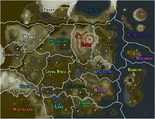

Abilities

Ultrahand is obtained within a shrine on the Great Sky Islands. Rauru gives you the power of Ultrahand
through the arm to complete the shrine. Ultrahand allows you to use pure light energy to move most items
and stick them together using a slimey substance. Ultrhand is use for building many Zonai machines along
with many other contraptions.
Fuse is another ability used through Rauru's arm and found in a shrine on the Great Sky Islands. Fuse ,
allows you to take any weapon and combine it with just about anything. From another weapon to boulders!
Fuse ugrades the duribility and enhances the damage of each weapon.
Acsend is yet another power on the Great Sky Islands and is used in the shrine. Using the arm, Ascend
allows you to faze through the ceiling above you. Ascend lets you go through boxes, and even the entire
map from the depths to the sky islands!
Recall is found in a hidden cave inside of the Great Sky Islands. Recall gives you the power to bring and
item back in time. As an example, if a barrell is thrown you can use Recall to bring it back. This also
works with falling rocks to bring yourself up to the sky islands.
Autobuild is a power found in the depths. It was found next to Yiga trying to figure it out. However, it
only works with Rauru's arm. Autobuild allows you to recreate any build yuo've built with Ultrahand. You
can also get schematics to learn new machines.
Camera is on the Purah Pad (basically and IPhone but worse) and it can take photos of anything. The
capacity is around 40 pictures until some need to be deleted. However, there is a compendium where it
stores photos of every weapon, item, animal, and monster you've taken!
The Map lets you see everywhere in Hyrule. And you can toggle from skyislands to the surface to the depths.
The map also lets you see shrines, towers, temples and lightroots. You can also teleport to these areas
using the map, as well as using Hero's path to show where you've been the whole game.
Amiibo is a DLC where you can summon many different items and chests each day. This can give an early game
start or just help in all, giving food and things to sell for rupees.
Image from. DeviantArt